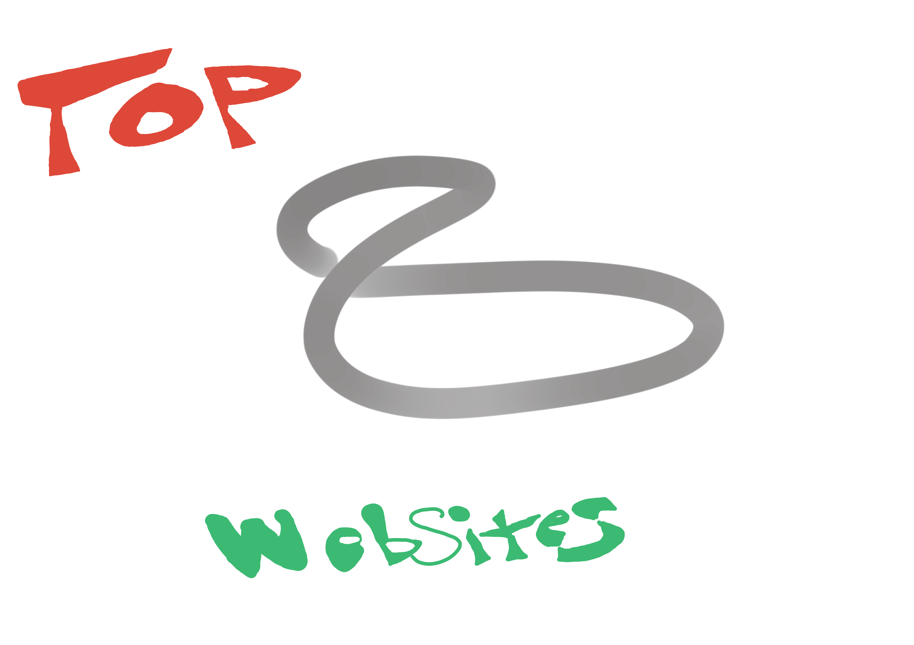

-
(1)
My most used Website would HAVE to go to YouTube its just so epic when I watch the funny videos on it.
(2)
The Schools LMS is probuly my second most used website, and for good reason, this puppy tells me what all my assignments are for school, lets me submit them, and shows me what classes I have.
(3)
My Third most used website would HAVE TO BE Outlook it knows just the right way to spam my phone when ever something in the schools LMS happens, I couldnt love the way it doesnt let me search for emails any more then I currently do, theirs just nothing like it.
(4)
Coming in at number FOOOOUR we have Mojong Solitar, its just such a goated game to play while im waiting for something to start, theirs no better way to kill 5 minuts and thats, a fact.
(5)
My GitHub Screams Number 5 best website to me, theirs nothing like going to my github and downloading the ET video game, or downloading ET vs Gon, theirs only one thing this website cant do, and thats be any cooler
(6)
Corning Credit Union holds ALL of my money, and if thats not reason enough to atleast put them on the list well then I dont know what is
(7)
Coming in at a Fatty number 7 is HiAnime this year they dropped significently in the standings, going down from number 2 to number 7, but what happened? the school stoped letting me go on their without a mobel hotspot so now I dont really use it anymore, its kinda a bumber but I think they still deserve this place
(8)
Saving the worst for last we have RO RO RO ROOOOBLOOX I like never use roblox but I ran out of websites I use so it got the spot